Visualise
A chart in your report is there to show the reader something they need to see before a decision makes sense. In this stage, we pick the right chart for each job: one column on its own, one column against the target, and columns against each other. The right chart depends on the type of column, so the first two panels have one question for each type.
Single columns
How to see the distribution and shape of a single column.
A column against the target
Whether a column looks different for each answer.
Columns against each other
Which pairs of number columns are linked, and how strongly.
Before comparing anything, we look at each column on its own. The right chart depends on the kind of column in front of you, so first find out what kind it is: dtypes tells you whether pandas sees numbers or text, and nunique() tells you how many different values a column has. Then open the question that matches your column.
Number columns do not all get the same chart. A column with many different values is drawn one way, and a column with only a few is drawn another. So first, we count how many different values the column has:
15
In the 30-member gym, visits has 15 different values. Find the card below that matches your own column, and open it. Each card shows a column from the gym.
Many different values
visits: 0, 1, 2, 3, … 14
15 different values
A measurement or a count. We draw a histogram or a box plot.
▾A few different values
classes: 0, 1, 2, 3, 4
5 different values
About ten values or fewer, and still an amount: 4 classes is more than 2. We draw one bar for each value.
▾A few numbers that stand for names
branch: 1, 2, 3
1 means city centre
2 means campus
3 means retail park
3 different values
The numbers are codes for the gym's branches, so branch 3 is not more than branch 1. We treat the column as text.
Many different values: a histogram or a box plot
A histogram shows the shape of a column, and a box plot sums it up in a small space.
A histogram shows the number of times each value appears: it splits the column into ranges (the "bins"), counts how many rows fall in each range, and draws a bar that high.
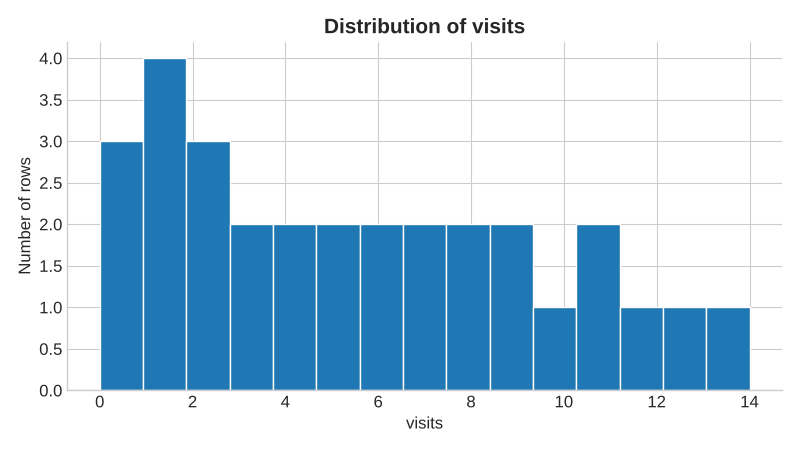
Look for four things in your own histograms:
- A long tail: a few values far bigger than the rest, which pull the average away from a typical value. In Bank Marketing,
balancehas an average of 1,362 but a middle value of 448. - A spike at one value: this may be a code (such as −1 for "never contacted"), a default that every record starts at, or a cap at a maximum. Find out which!
- Two humps: the column may hold two different groups of rows.
- An even spread: the values are spread across the range with no clear peak.
A box plot shows the same column in a much smaller space. The box is the middle half of the data, the line inside it is the middle value (the median), and any dots are values more than 1.5 box-lengths beyond the box:
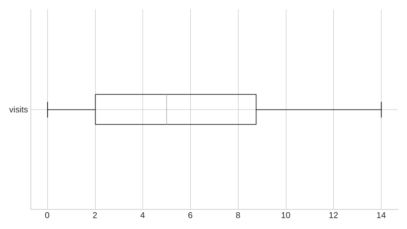
Pick the histogram when the shape itself matters (a tail, a spike, two humps). Pick the box plot when you are comparing several columns or groups side by side. In your report, say in one sentence why you chose the one you did.
A few different values: a bar for each value
In the gym, classes is the number of classes a member books each week, and it only takes five values: 0, 1, 2, 3 and 4. With this few values, we give every value its own bar. value_counts() counts the rows for each value, and sort_index() puts the bars in number order. Without it, the bars are sorted from the most common value to the least:
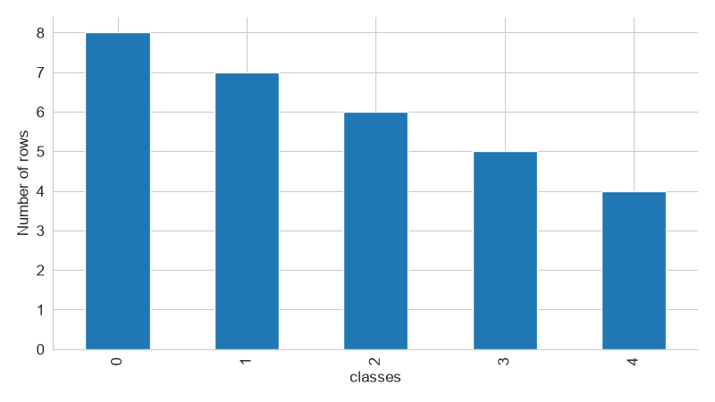
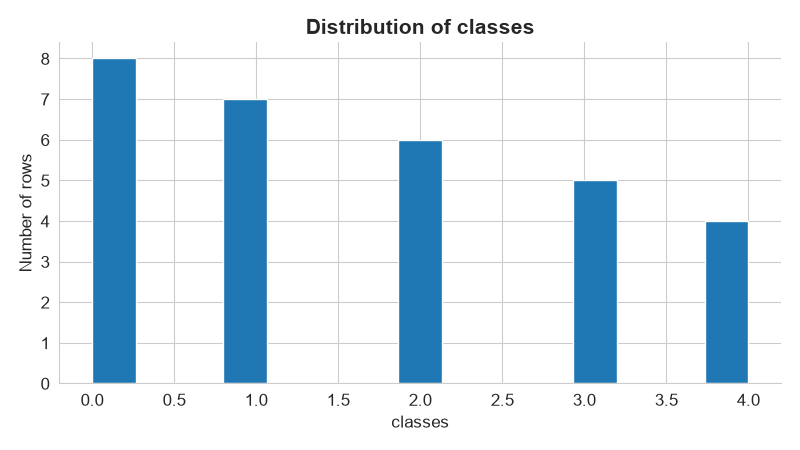
Read the bar chart like a histogram: where do most of the rows sit, and is any value almost empty?
In your report, say what the values stand for (here, classes per week), because a reader cannot tell a count from a 1 to 4 scale by looking at the chart.
A few numbers that stand for names: treat the column as text
To check, ask whether a bigger number means more of something. In the gym, 1 is the city centre branch, 2 is the campus and 3 is the retail park, so branch 3 is not more than branch 1. The numbers are names. A histogram or an average would treat them as amounts, so we draw the column the same way as a text column.
Open the text column question, which shows the chart for the gym's branch column.
There is one more case. If the number of different values is the same as the number of rows (len(df) gives the number of rows), the column is an ID that only labels the rows, and it does not need a chart.
A text column cannot go in a histogram, because words cannot be split into ranges. Instead, we count the rows for each category and draw one bar for each:
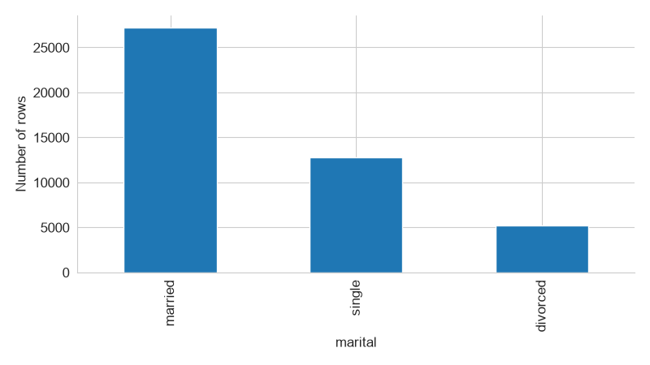
value_counts() sorts the bars from the most common category to the least, which makes the chart quick to read. Look for a category with very few rows, because anything you say about it later rests on those few rows.
If the category names are long and hard to read on their side, change kind='bar' to kind='barh', which draws the bars sideways and writes the names level.
In your report, give the count or the share for each category you mention.
The same chart is right for a number column whose numbers are names. In the gym, branch holds 1, 2 or 3, and each number stands for a branch (1 is the city centre, 2 is the campus and 3 is the retail park), so branch 3 is not "more" than branch 1. A histogram or an average would treat the codes as amounts, so we count the rows for each code instead. Type the column into the box above, and run the same code:
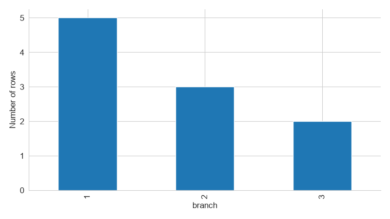
Your reader will not know what code 1 means, so say what each code stands for in your report, or swap the codes for names first, as the Prepare stage shows.
First, we list the categories, so that we can see exactly how each one is spelt:
<StringArray> ['tertiary', 'secondary', nan, 'primary'] Length: 4, dtype: str
In Bank Marketing, education runs from primary to secondary to tertiary (nan is an empty cell, not a category). Sorted by count, the bars would come out as secondary, tertiary, primary, and the order would be lost. So we write the order ourselves, and reindex puts the bars in it:
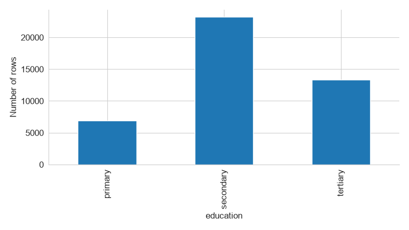
If a bar is missing, check the spelling in your list. reindex only finds a category when it is typed exactly as it appears in the column, including capital letters and spaces.
With the bars in order, you can see whether the counts rise, fall or peak in the middle, which a chart sorted by size would hide.
A month column stored as text is an ordered text column, and its order is the calendar. Left alone, the months are sorted by count or by the alphabet, and the alphabet puts April first and September last. So we list the months in calendar order, and reindex puts the bars in it:
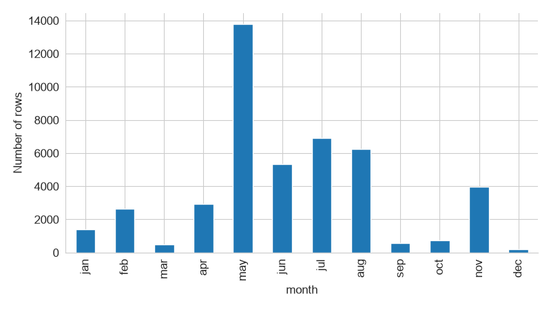
The names in the list have to match your column exactly. Bank Marketing writes jan, feb, mar. If your column writes Jan or January, change the list to match (check with unique(), as in the previous question). The same idea works for days of the week.
In calendar order, the chart can show a pattern through the year, such as a busy season. If a month has very few rows, be careful about anything you say about it.
First, we count how many categories the column has:
11
A bar for every category gets hard to read once there are more than about ten, and most of the bars are tiny. So we keep the most common categories, and add the rest together into one bar called "other". head keeps the top of the list, and iloc picks out everything after it:
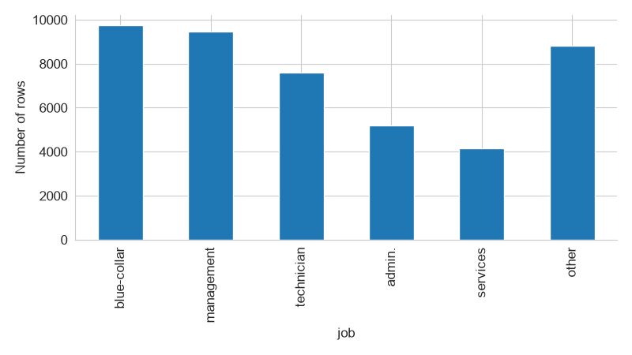
job column: the five most common jobs, and one bar for the other six jobs added together (8,811 clients).Bank Marketing's job has only 11 categories, so we kept 5 to show the idea. On a column with many more, start with 10. If "other" comes out as the tallest bar, keep more categories.
In your report, say how many categories went into "other", so that the reader knows the bar is a mix.
A yes/no column has only two values, so its chart is two bars:
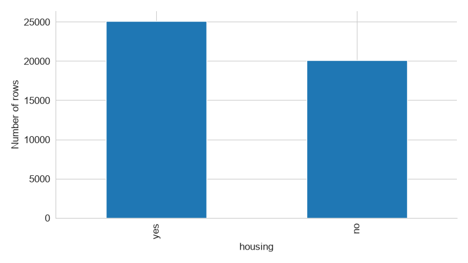
With only two bars, the shares often say as much as the chart does:
housing yes 0.56 no 0.44 Name: proportion, dtype: float64
In your report, one sentence with the two shares is usually enough for a yes/no column (56% of clients have a housing loan). Keep the chart for the columns where the split is surprising, or where a later decision depends on it. The same code works when the two values are True and False, or 1 and 0.
A bar chart draws one bar for each answer, as tall as the number of rows with that answer. value_counts() does the counting, and plot(kind='bar') draws the bars:
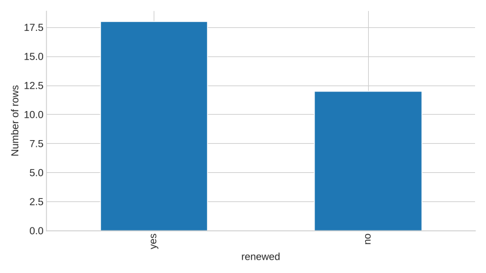
The same code works when your target has more than two answers: you get one bar for each answer.
To put the shares in your report, divide the counts by the number of rows:
renewed yes 0.6 no 0.4 Name: proportion, dtype: float64
Look at how far apart the two bars are. In Bank Marketing, 39,922 clients said no (88.3%) and 5,289 said yes (11.7%), which is 7.5 "no" for every "yes". A pie chart can show the same split, but slices are harder to compare by eye than bars, so a bar chart is the safer choice. In your report, give the counts and the shares, and say what the split means for your project.
A column is useful to a model when it looks different for each answer. Drawing a column split by the target shows this at a glance, so that you know which columns carry a signal about the answer before you train anything. As in the first panel, open the question that matches the type of your column.
The same split applies here as for a single number column. So first, we count how many different values the column has:
15
In the 30-member gym, visits has 15 different values. Find the card below that matches your own column, and open it.
Many different values
visits: 0, 1, 2, 3, … 14
15 different values
A measurement or a count. We draw one histogram for each answer, on the same axes.
▾A few different values
classes: 0, 1, 2, 3, 4
5 different values
About ten values or fewer, and still an amount. We draw the share of one answer for each value.
▾A few numbers that stand for names
branch: 1, 2, 3
1 means city centre
2 means campus
3 means retail park
3 different values
The numbers are codes for the gym's branches, not amounts. We treat the column as text.
Many different values: one histogram for each answer
One histogram for each answer, drawn on the same axes, shows whether the groups look different.
sns.histplot draws one histogram, and hue splits it into one set of bars for each answer, in its own colour, with the same bins for both, so that the two groups can be compared directly.
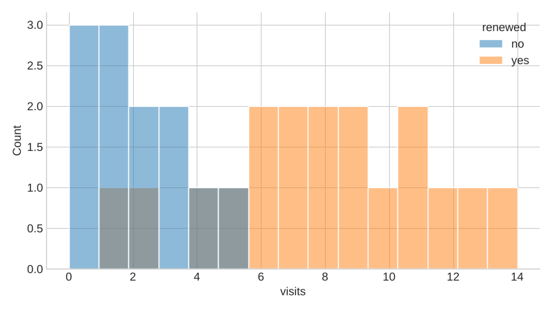
Two different shapes mean the column holds a signal about the answer, so keep a note of it. The same shape for both answers means the column may add little, but do not delete it yet, because it may still help alongside other columns.
When one answer is much more common than the other, raw counts flatten the smaller group into the bottom of the chart. In Bank Marketing, there are 7.5 times more "no" rows than "yes" rows. stat='density' with common_norm=False scales each group to the same total area, so that you compare the shapes, not the sizes:
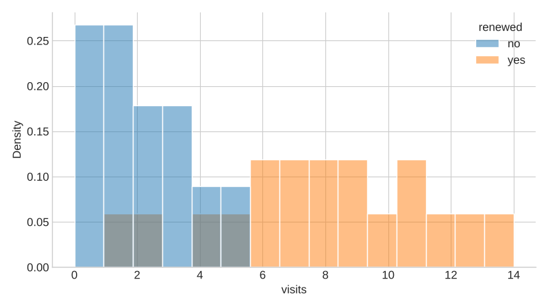
In your report, say what the chart shows about the two groups, and which later decision depends on it.
A few different values: the share of one answer for each value
With only a few different values, we work out the share of each answer for every value of the column. pd.crosstab counts the rows for every pair of a value and an answer, and normalize='index' turns each row of counts into shares. Then we draw the share for one answer:
renewed no yes classes 0 0.88 0.12 1 0.57 0.43 2 0.17 0.83 3 0.00 1.00 4 0.00 1.00
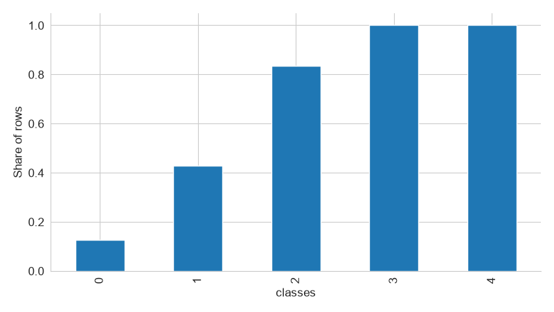
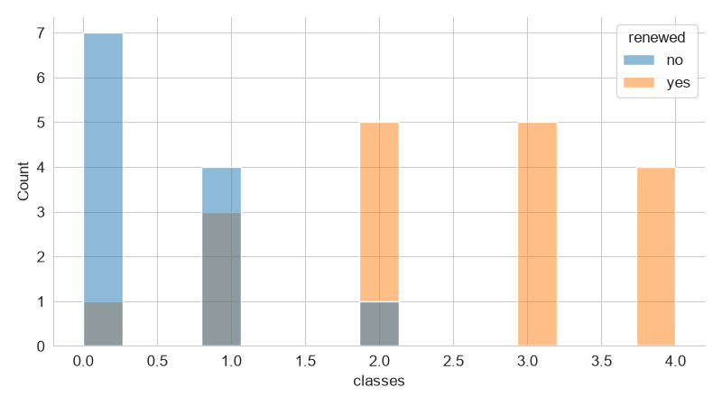
The bars are already in number order, because crosstab sorts the values. A share that rises or falls steadily from left to right means that the column holds a signal about the answer.
If you see KeyError, the answer in the square brackets is not spelt the way it is in your target column.
A share worked out from only a few rows can swing a long way. Check how many rows each value has with value_counts() before you write about it: in the gym, the bar for four classes rests on only 4 members.
A few numbers that stand for names: treat the column as text
To check, ask whether a bigger number means more of something. If it does not, the numbers are names, and we compare them with the target the same way as a text column: the share of each answer for each name.
Open the text column question, which shows the chart.
pd.crosstab counts the rows for every pair of a group and an answer. normalize='index' turns each group's counts into shares, so that a big group and a small group can be compared fairly:
renewed no yes plan annual 0.2 0.8 monthly 0.6 0.4
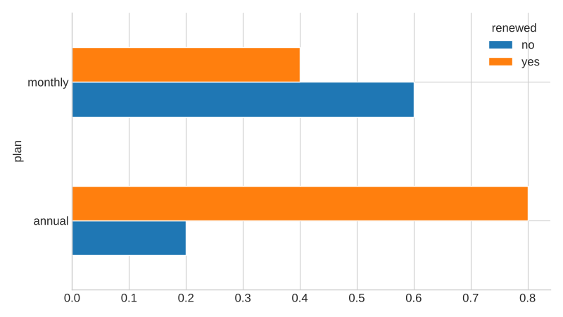
In Bank Marketing, the same chart for job shows that students (28.7%) and retired clients (22.8%) said yes far more often than the overall rate of 11.7%. Bars of the share tell you which groups say yes more often, while bars of the counts tell you how many rows are in each group.
A share worked out from only a few rows can swing a long way, so check how many rows each group has before you write about it:
plan monthly 15 annual 15 Name: count, dtype: int64
In your report, give the number of rows next to any group whose share stands out.
A column of number codes works the same way, because crosstab treats each code as a group.
crosstab sorts text categories by the alphabet, which is rarely their real order. So we add reindex(order), with the categories listed in order:
y no yes education primary 0.91 0.09 secondary 0.89 0.11 tertiary 0.85 0.15
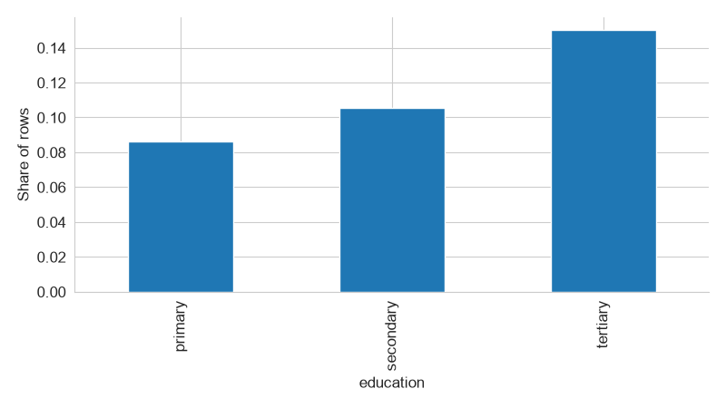
With the bars in order, look for a share that climbs or falls from one end to the other. That pattern is easy to miss when the bars are sorted by the alphabet.
For a month column, put the months in order, in calendar order. In Bank Marketing, this shows that March, September, October and December have a far higher share of "yes" than the other months (between 44% and 52%, against 7% in May). Those are also the four months with the fewest calls, so a big share from a small group needs its number of rows beside it.
A yes/no column splits the rows into two groups, so we compare the share of each answer in the two groups:
y no yes housing no 0.83 0.17 yes 0.92 0.08
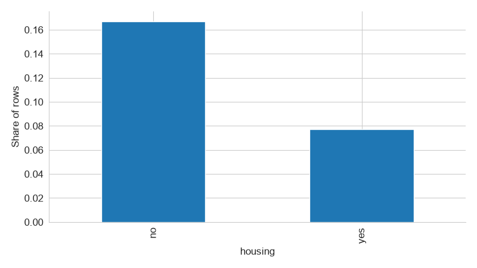
Read the labels before the numbers! The table has one yes/no going down the side and another along the top. Here, the rows are housing and the columns are the target, y.
With only two groups, a sentence can do the job of the chart: give both shares, and how many rows are in each group.
Two number columns are linked when one goes up or down along with the other. A strong link can mean the two columns say the same thing, and a link with the target shows which columns move with the answer.
A correlation is a number from −1 to 1. Close to 1 means the two columns go up together, close to −1 means one goes down as the other goes up, and close to 0 means there is little straight-line link. A heatmap colours each pair by its correlation. The loop in the code below turns a yes/no target into True/False, so that the target appears in the heatmap too.
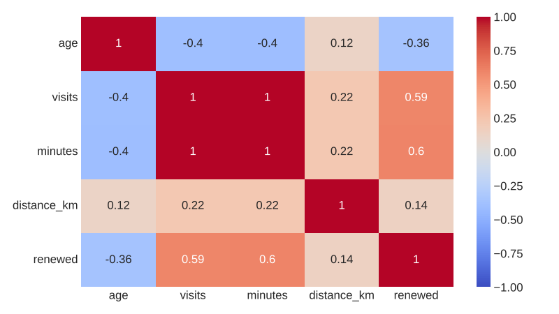
visits and minutes are linked at 1, and renewed is linked to both at about 0.6.Read the cells off the diagonal (the diagonal is each column against itself, so it is always 1). The target's row shows which columns move with the answer. A pair close to 1 or −1 may say the same thing twice, and the Prepare stage shows how to check and fix that. Correlation only sees straight-line links, and only between numbers, so use the text-column chart in the previous group for text columns.
When there are only a few columns, or only one pair worth mentioning, a short table says it more simply than a heatmap. In Bank Marketing, the only pair above 0.3 is pdays and previous, at 0.45. If nothing is strongly linked, say so in your report, because a decision not to remove anything still needs its reason.